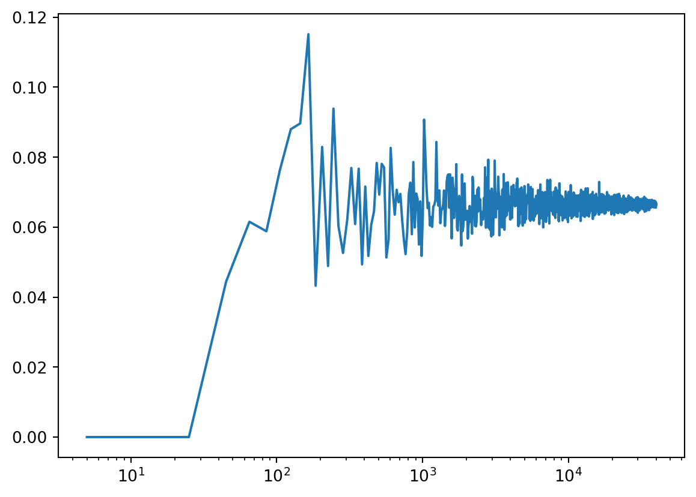
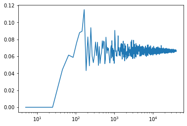

import pandas as pd
import matplotlib.pyplot as plt
import numpy as np
import scipy.stats as statsUsing distributions to analyse your data
Background to this example
Data comes in all sorts and forms within Earth sciences, from long term paleo records describing Oxygen levels in the atmosphere, time series of river discharge and spatio-temporal satellite images monitoring the vegetation. Within Earth Sciences we work with all these types of data to understand the past, present and future of the Earth system. Before we can work with these types of data we need to understand what we can and cannot do with the data, which conclusion we can and cannot draw.
In this practical you will learn about
Simple plots to look at your data
How to see which distribution can be used to describe the data
Which measures you can use to describe a distribution
How to check exceedance of thresholds
How to work with small samples and what distributions to use in that case
Getting started
Let’s start with using Python again by opening your Conda environment and then opening Spyder (for detailed instructions please look back at the first practical). We start by loading some of the stand libraries in this course. We use:
Pandas (data management and data handling)
Numpy (statistical analysis and data handling)
Matplotlib (plotting)
Scipy (statistical analysis)
Now we are going to take a look at the first dataset which contains information about the daily temperatures in the Netherlands. We tell pandas to parse the date information, and use it as row labels:
Tas = pd.read_csv("../Data/dailyTemperature.csv", parse_dates=True, index_col=0).dropna()
Precip = pd.read_csv("../Data/dailyPrecipitation.csv", parse_dates=True, index_col=0).dropna()
Evap = pd.read_csv("../Data/dailyEvaporation.csv", parse_dates=True, index_col=0).dropna()Normal or not
Let’s start with exploring different data sources, we want to identify which distributions they follow.
Question 1
Let’s start with a visual inspection. A good way to start is to make a histogram of you data. Use the cheat sheet to explore which function to use to make a histograms of the different meteorological variables.
As you might have seen some distributions are unlikely to be normal, but we have another way of testing this using the QQ-plot.
Question 2
Let’s continue with a second visual inspection. Use your knowledge from last week (or look back) to make a QQ plot of the meteorological variables. What is your conclusion based on this analysis? Are the variables normally distributed?
Question 3
Try to implement the Shapiro Wilks test in Python on a different dataset. You can use the function stats.shapiro, for which you find the manual here: https://docs.scipy.org/doc/scipy/reference/generated/scipy.stats.shapiro.html.
How do you interpret the return values of the test (p value and statistic)?
Question 4
Based on the different test, histogram, QQ-plot and statistical test with Shapiro Wilks, what are your conclusions? They do not have to align for the different tests.
We can also derive two mean statistical properties for the temperature dataset, namely the mean and standard deviation.
Exploring the temperature data
Question 5
Obtain the mean and standard deviation for the temperature record.
For simplicity, we now assume our data is normally distributed. Now that we got the mean and standard deviation we can calculate the possibility of daily temperature exceeding certain thresholds. You can use the stats.norm.cdf() function for this, and then provide the mean and standard deviation you found earlier. Make sure you understand what the number returned by cdf (cumulative distribution function) represents.
Question 6
What is the chance of having a daily temperature above 20C
If all is well you found that in roughly 5% of the days we have temperatures above 20C in the Netherlands. If this number seems low to you, mind you that we are here talking daily average temperatures and not maximum temperatures that are often reported on the news.
A question we often hear in the media, is climate change already happening and is the world really getting warmer? Let’s test that for the Netherlands.
Question 7
Select the last 20 years on the record and compare those to the entire record that we have. First select the years, calculate the new mean and standard deviation and then see if we are more likely to observe temperatures above 20C compared to the full record from 1901 onwards.
If you did it well you find that the probability of Tas > 20C has increased from 5% to 7%. So far we have done this mostly with the statistical approximiation of the data (e.g. a fitted normal distribution), however we also have the real data available. As a tip look at the startingPandas practical on how to test an entire dataframe for a certain condition.
Question 8
Count the number of days that exceed or equal >= 20C for the entire record and the last 20 years and convert these into fractions.
If you did it well you find that in the total record we have 1436 days with temperatures >= 20C for a total of 45097 days, which results in 3.2% of the days. For the last 20 years we 420 years >= 20C for a total record length of 7305 which results in 5.7% of the days. As you can see these numbers don’t match the once you found for Question 7.
Question 9
Using the QQ plot you made earlier, can you see a reason why the normal distribution is not doing a good job for this assessment, especially for the high values? Would you expect that the answers for Questions 7 and 8 are closer when looking at <= 0C?
Question 10
Repeat Questions 6, 7 and 8 but now for <= 0C. Was your initial estimate correct? If all went well you find that the chance of <= 0C temperatures is around 6.5% for the entire data record (depending on the method used) and 4.1% for the last 20 years.
Question 11
Can you conclude from your assessment of Tas <= 0C that temperatures are rising and that iceskating becomes less and less likely? Or would you like to propose additional calculations or data requirements?
Using the same weather data the KNMI did an in-depth assessment, you can compare your answers to what they found and see if your finding are in line.
Exploring precipitation data
As you could already see from the Questions 2,3 and 4 the precipitation data is certainly not normally distributed, it actually follows a different type of distribution. You have learned a distribution has multiple moments.
Question 12
Obtain the first four moments for the precipitation data and don’t forget to use the dropna() function to ensure that you can calculate those. You will have to rely on the Scipy functions for summary statistics
You find that the precipitation violates the normal distribution properties and is highly skewed. As a result precipitation often follows a gamma distribution, which is bounded by zero with a long tail. In Python you can fit any kind of distribution to your data and check if it makes sense. Below you find example to fit both a normal and gamma distribution
mean, std = stats.norm.fit(Precip)
randomData = stats.norm.rvs(mean, std, size= len(Precip))
Precip.hist(alpha=0.5)
plt.hist(randomData, alpha=0.5)
plt.show()alpha, loc, beta = stats.gamma.fit(Precip)
randomData = stats.gamma.rvs(alpha, loc, beta, size= len(Precip))
Precip.hist(alpha=0.5)
plt.hist(randomData, alpha=0.5)
plt.show()You can see straight away that fitting the normal distribution is not working for this example and the gamma distribution is more suited for this purpose. We will not further explore this specific gamma distribution, but you know now how to obtain the parameters for any distribution in Python. We will now however further explore the annual maximum precipitation event.
Question 13
Start by resampling the precipitation data to obtain the annual maximum value using the resample function. After that make a histogram of the data and describe what you see.
Question 14
Does the annual maximum precipitation reflect a normal distribution or not?
Question 13
Now transform the data to a logarithmic and make a histogram plot. Does it now reflect a normal distribution?
If all is well you find that the logarithmic annual maximum precipitation does approach a normal distribution. The advantage of this is that we can now use all the tools and test we have available for the normal distribution to test different hypothesis on the data.
Exploring binominal and Poisson distributions
We can also ask ourselves the question how often does “x” happen, where “x” is a certain event or extreme. Let’s go back to the temperature data and the iceskating example. In the Netherlands people are always concerned whether or not we can have a Elf-stedentocht or when we can go skating in general. Use the variable you created for Question 11, which should be a dataframe that has True and False values from 1901 onwards. We have already concluded that there is 6.5% chance of obtaining a day <= 0C. Let’s assume that this value is the true chance of having a <= 0C. We can start drawing random samples from the full dataset.
## To ensure we get the same random samples and thus the same answers.
np.random.seed(10)
sampleSize = 100
sampleData = Tas.sample(sampleSize)
fraction = sampleData[Tas <= 0].count()/sampleSize
print(fraction)You find that the fraction is higher than the expected value of 6.5% or 0.065. This is because our sample size is insufficient to correctly reflect the data observational record. Again this confirms that sample size is very relevant when doing your work, getting enough data is key in the real world and Geosciences as well. We will explore how many samples we need using a for-loop.
## To ensure we get the same random samples and thus the same answers.
np.random.seed(10)
## Sample size
samplePoints = np.arange(5,40000,20)
## Empty array for the output
fraction = np.zeros(len(samplePoints))
## For-loop that loops over the samplePoints and at the same time over index numbers ranging from 0 to the length of the samplePoint variable
for s, i in zip(samplePoints, range(len(samplePoints))):
sampleData = Tas.sample(s)
fraction[i] = sampleData[Tas <= 0].count().iloc[0]/s
## Plotting the output with log x-axis
plt.plot(samplePoints, fraction, "-")
plt.xscale('log')
plt.show()

You will observe that you need a rather large sample size to obtain the “True” value of 6.5% and that it is still converging even with 40000 samples present.
Question 14
Do you think it will take longer or shorter to obtain the “True” exceedance of a value if you take a threshold with a higher probability, for example 10C. Test this with the script above and provide the figure
We can also ask ourselves the question how many days will we get in the coming year that have temperature <= 0C. For this we can use the Poisson distribution to generate likely distributions of freezing temperatures in every year. We know from the previous analysis that we have 3004 days that <= 0C for a total record length of 45097 days, which mean on average we have 3004/45097*365.25 = 24.33 days with <= 0C per year on average since 1901. Now lets plot a Poisson distribution.
np.random.seed(10)
avgDays = 24.33
randomYears = stats.poisson.rvs(avgDays, size=1000)
plt.hist(randomYears)(array([ 5., 25., 87., 190., 221., 283., 127., 46., 12., 4.]),
array([ 9. , 12.2, 15.4, 18.6, 21.8, 25. , 28.2, 31.4, 34.6, 37.8, 41. ]),
<BarContainer object of 10 artists>)
Question 15
We can also use the Poisson distribution to ask questions like what is the likelihood of having less than 15 freezing day? Use the stats.poisson.cdf(k, mu) to find the chance of having less than 15 freezing days in a given year.
Question 16
If you have paid carefull attention you might have noticed that in this case the Poisson distribution is approaching a normal distribution. This means again that we the Central Limit Theory comes into play. Now please lower the probability of 24.33 to something like 3 days per year does this still approach a normal distribution and if not why not?
Using a t-distribution
When we are working with problems that have small samples size, for example the field observations where sample sizes might be as low as several measurements maybe up to a 100. Since in these measurements the true variance of the mean is unknown, it must be approximated by the sample standard error of the mean. And the ratio between the sample mean and the standard error had a distribution that is called the t-distribution, and converges for larger values towards the normal distribution.
We can both the normal and distribution for the Temperature dataset with the fitting information from Question 12. We first fit both a t-distribution with a limited sample and a normal distribution and then plot the cumulative density function (CDF) for both distributions.
sampleTas = Tas.sample(50, random_state=1)
tStat, loc, scale = stats.t.fit(sampleTas)
degreeF = len(sampleTas) - 2
mean, std = stats.norm.fit(sampleTas)
xLocs = np.arange(Tas.min().iloc[0], Tas.max().iloc[0], 0.05)
plt.plot(xLocs, stats.t.pdf(xLocs, degreeF, loc, scale), "-", color = "Red", label="t-dist")
plt.plot(xLocs, stats.norm.pdf(xLocs, mean, std), "-", color = "Blue", label="normal-dist")
plt.legend()
plt.show()And again for the full sample of data.
tStat, loc, scale = stats.t.fit(Tas)
mean, std = stats.norm.fit(Tas)
degreeF = len(Tas) - 2
mean, std = stats.norm.fit(Tas)
xLocs = np.arange(Tas.min().iloc[0], Tas.max().iloc[0], 0.05)
plt.plot(xLocs, stats.t.pdf(xLocs, degreeF, loc, scale), "-", color = "Red", label="t-dist")
plt.plot(xLocs, stats.norm.pdf(xLocs, mean, std), "-", color = "Blue", label="normal-dist")
plt.legend()
plt.show()Question 17
Do you think there is a significant difference between the t-distribution and the normal distribution for small samples? And for the large sample?
Now we will run the same experiment on a smaller data sample. First we create the subset of the temperature data.
np.random.seed(10)
sampleSize = 100
sampleData = Tas.sample(sampleSize)Question 18
What happens if you use a smaller subset of the temperature data, does the t-distribution still approximates the normal distribution of the full dataset? Adjust the codes about to show the CDF plot of the sampleData and describe your interpretation of the CDF.
Do your own data exploration
Q = pd.read_csv("../RawData/Rhine_total.txt", parse_dates=True, index_col=0)Question 19
You have loaded the daily discharge data for the Rhine river, now start and exploring. You should make the following things:
Some plots that allow you to understand what the data looks like
Describe some relevant statistical values
Describe if the data is normal or not and why
Answer the questions:
How often do we get floods above 8000m3s-1
How often do we go below 1000
Create a Poisson distribution for both flood and drought
Calculate the exceedance for flood and drought
Tip you can calculate the annual occurrence by comparing the values to your threshold
Then resample to yearly values
Then calculate the number of times you actually have a value
Flood: Q[Q>8000].resample(“YE”).count()
Drought: Q[Q<1000].resample(“YE”).count()
Can you hypothesis why the Poisson distribution doesn’t work for the drought example?
What you have learned today
If all is well you have learned today:
Simple plots to look at your data
How to see which distribution can be used to describe the data
Which measures you can use to describe a distribution
How to check exceedance of thresholds
How to work with small samples and what distributions to use in that case